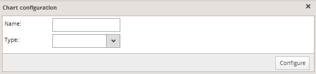

You can add a new chart into the panel using the “Add chart” button located by the upper left side of the chart panel. After clicking on this icon, dialog for setting the chart title and type appears:

Fill in the chart title and select the chart type. Then press the “Configure” button to continue and a dialog for chart configuration is expanded so you can proceed with the defining of the chart properties.